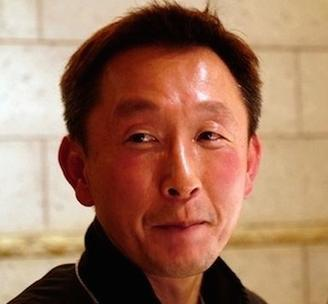
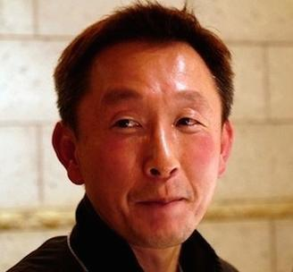
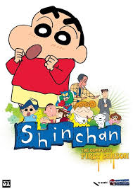
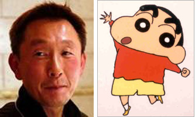

1990 - Creation
Yoshito Usui created the manga *Crayon Shin-chan*, first published in *Weekly Manga Action*.
Yoshito Usui created the manga *Crayon Shin-chan*, first published in *Weekly Manga Action*.
The *Crayon Shin-chan* anime debuted on TV Asahi, bringing Shinchan to a wider audience.

The first Shinchan movie, *Action Kamen vs. Haigure Maou*, hit theaters, starting the annual movie tradition.

The anime was dubbed in multiple languages and aired in over 45 countries. Shinchan became a global icon, loved by children and adults alike.
Yoshito Usui tragically passed away. The original manga ended, but his team continued the series as *New Crayon Shin-chan*
*New Crayon Shin-chan* began publication. This ensured the continuation of Shinchan's legacy.

The anime continues to air, with over 1,200 episodes and numerous movies. Shinchan remains a beloved character, influencing pop culture and entertainment.